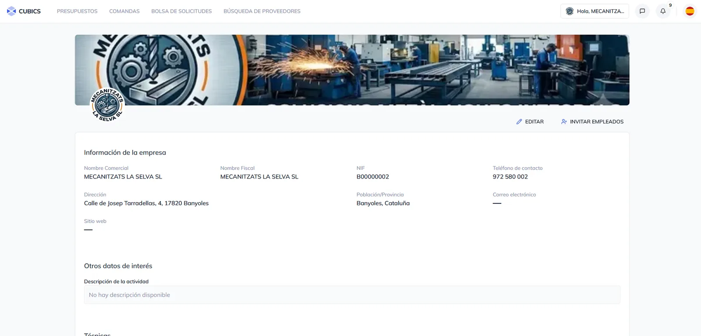
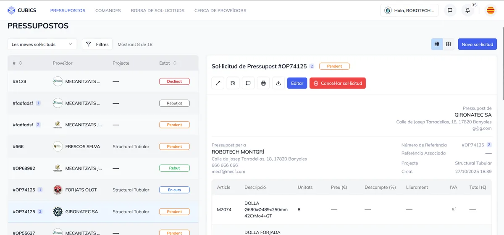
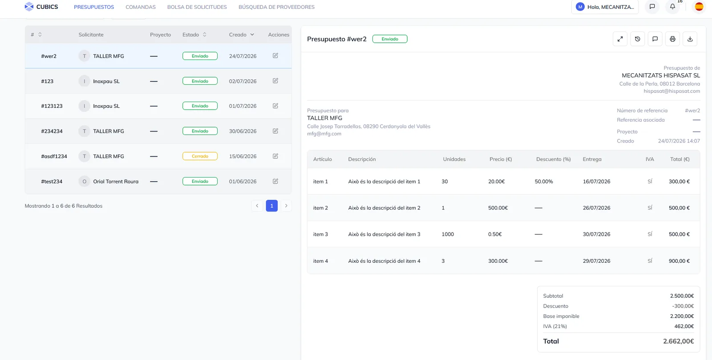
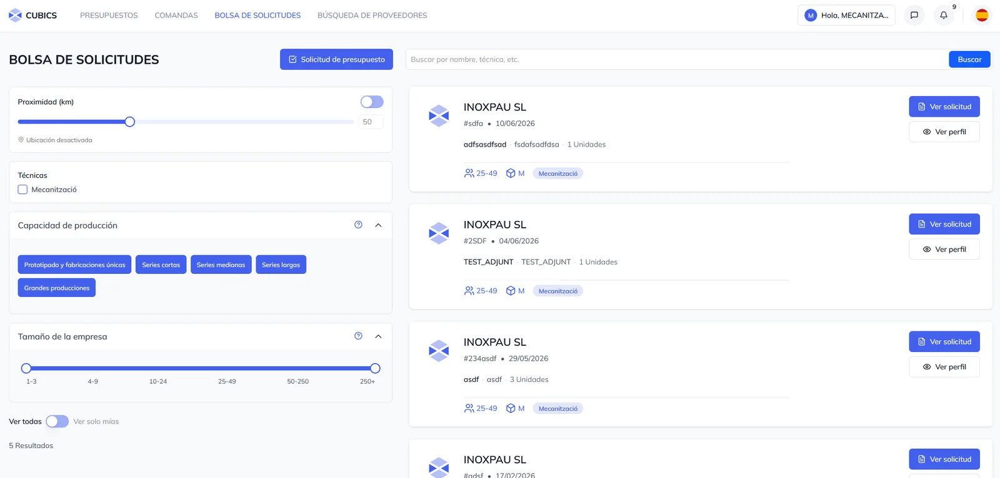

CA
CA
Configurar el perfil d’empresa
Mostreu capacitats, sectors, certificacions i exemples de projectes per convertir el vostre perfil en un punt d’atracció comercial.

Racionalitzeu el vostre procés de compra i gestió de proveïdors amb solucions a mida per al vostre sector.

Presentació de Cubics
És un plaer poder-li anunciar que Cubics neix com a iniciativa per resoldre diversos aspectes clau de la cadena de subministrament metal·lúrgic.
Per a qui és Cubics
Cubics és una xarxa industrial d’empreses del sector que tenen com a objectiu desenvolupar negoci conjuntament. Es tracta d’una plataforma transversal de la qual en formen part tant els consumidors de productes a mida com els seus fabricants, facilitant tota la gestió comercial en un espai únic.
Configurar el perfil d’empresa
Mostreu capacitats, sectors, certificacions i exemples de projectes per convertir el vostre perfil en un punt d’atracció comercial.

Gestionar la informació comercial de forma centralitzada
Totes les consultes, ofertes i comandes en un mateix espai, evitant la distorsió de fils de correus aïllats i documents dispersos.

Escollir les sol·licituds que més s’adaptin a les vostres capacitats
A partir de la publicació de les consultes dels clients, podeu centrar els esforços de cotització en aquelles oportunitats on sou més competitius.

Tutorials
Dos vídeos curts, sense explicacions llargues: només el que cal per començar a treballar amb la plataforma des del primer dia.
Consulteu les sol·licituds de pressupost publicades pels clients, filtreu-les segons les vostres capacitats i reserveu aquelles on sou més competitius.
Obriu una sol·licitud, prepareu la vostra oferta amb preus, terminis i documentació, i envieu-la al client des de Cubics sense cap correu pel mig.
Contacte
Poseu-vos en contacte amb nosaltres i us mostrarem com Cubics pot ajudar el vostre equip comercial i de producció.